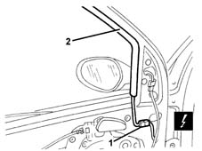

7005D19 (One), LOWERING WINDOW CHANNEL left or right for front side door on vehicles with anti-crush sensor - R.R.
- Path
- Procedures > 70 FITTINGS > 7005 PASSENGER COMPARTMENT FRONT SIDE DOORS > 7005D front side door window glasses > 7005D19 (One), LOWERING WINDOW CHANNEL left or right for front side door on vehicles with anti-crush sensor - R.R.
- Kind
- repair procedure (removal / refitting; the operation number is the code)
- Applies to
- all engines; all production periods
- Interactive page
- https://sloeber94.github.io/elrnDB-lYpsln/en/#/2429502
Applies to: all engines; all production periods
 Removing
Removing
 Refitting
Refitting7005C44 interior handle panel - r r
7005M11 Driver's front door electric window control SWITCH - R.R.
7005M12 passenger side front door electrically operated window switch - r r
7005E12 corner cover of one front side door, lh or rh r r
7005A08 interior support frame of one side door r r with door panel removed
Lower the window.
1. Disconnect the electrical connection.
 | Name | Connector |
|---|---|---|
1 | Front door anti-crush sensor |
| Name | Connector |
|---|---|---|
1 | Front door anti-crush sensor |
2. Release the safety sensor channel.

Applies to: all engines; all production periods
Refitting
RemovingCheck the condition of the safety sensor channel.
Position the channel in its housing.
Connect the electrical connection.
7005A08 interior support frame of one side door r r with door panel removed
7005E12 corner cover of one front side door, lh or rh r r
7005M12 passenger side front door electrically operated window switch - r r
7005M11 Driver's front door electric window control SWITCH - R.R.
Topics linked from this page (7)
- 7005A08 interior support frame of one side door r r with door panel removed
- 7005C44 interior handle panel - r r
- 7005E12 corner cover of one front side door, lh or rh r r
- 7005M11 Driver's front door electric window control SWITCH - R.R.
- 7005M12 passenger side front door electrically operated window switch - r r
- K22 Front door anti-crush sensor
- K23 Front door anti-crush sensor